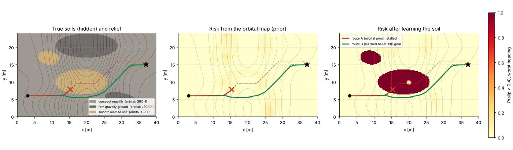
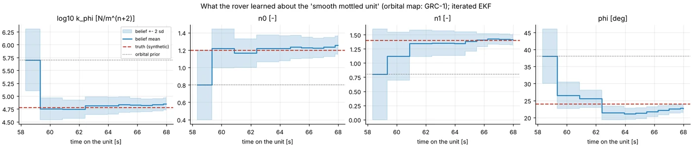

A missão, escrita em linguagem comum, pede uma travessia até um ponto de coleta. O plano direto, traçado no mapa orbital, tem 12,9 m. Ele trava a um terço do caminho, com 42% de escorregamento e 319 mm de afundamento: areia, não solo compacto.
O ciclo
A plataforma roda a missão no multibody, vê a roda patinar, trata o que encontrou como regolito, aprende os parâmetros do solo a partir do próprio escorregamento com um filtro de Kalman iterado, refaz o mapa de risco e replaneja. Nada disso é informado por fora: o único sinal novo é o que aconteceu com as rodas.

Os números
Rota A, direta: 12,93 m, 2.958 J, escorregamento máximo de 0,42, afundamento máximo de 319 mm, e a crença aprendida dizendo que 100% da rota estava acima do limite de escorregamento. Rota B, replanejada: 28,56 m, 2.869 J, escorregamento de 0,21, afundamento de 30,7 mm e risco zero.
A rota mais longa gastou 3% menos energia. Percorreu 2,2 vezes a distância, com metade do escorregamento e um décimo do afundamento, o que é o ponto: em solo fofo, quilômetro não é o custo, patinagem é.

O que foi aprendido, e com que erro
Contra o solo verdadeiro do sítio sintético, a crença final ficou em 0,072 de erro em log₁₀ k_phi (1,14 desvio-padrão da posterior), 0,057 em n0 (1,02 desvio-padrão) e 0,0145 em n1 (0,29 desvio-padrão). O erro é pequeno e, mais importante, compatível com a incerteza que o próprio filtro declara.

Por que isso é o produto
A diferença entre um plano e um bom plano é o que se aprende no caminho. Aqui o caminho ensina, o plano muda, e o relatório diz o que foi aprendido e com que erro, que é o que permite a um engenheiro aceitar ou recusar a decisão.